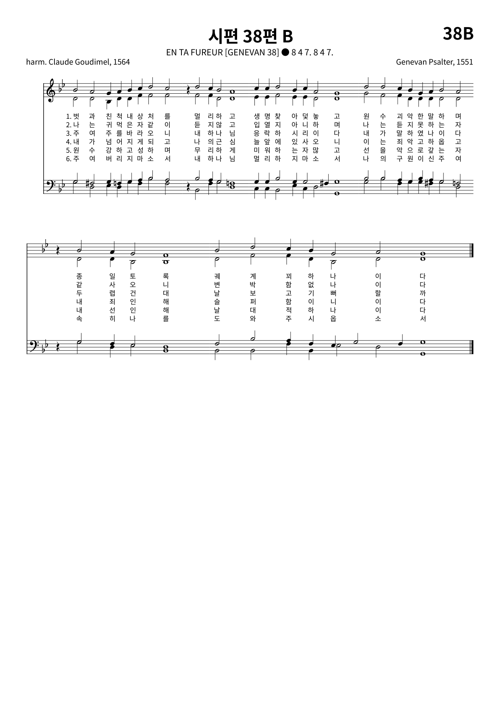

Psalm 38B
EN TA FUREUR [GENEVAN 38] · 8 4 7. 8 4 7.
English title: LORD, Rebuke Me Not in Anger
Tune: Genevan Psalter, 1551 · Harmony: Claude Goudimel, 1564 · Lyrics: Korean adaptation of Psalm 38 from the Korean Revised Version (AI draft adaptation · not yet theologically reviewed) · 6 stanzas
Psalm 38 is divided into 2 tunes: A B · This tune contains stanzas 6–11 of the Psalm 38 lyrics.
Score PDF MusicXML (for printing) MusicXML (for accompaniment, with prelude and repeats) Read Psalm 38 (Korean Revised Version)
Score
← Psalm 38A ListAccompaniment (in preparation)Psalm 39 →
Lyrics (Korean)
Stanza 1
벗과 친척 내 상처를
멀리하고
생명 찾아 덫 놓고
원수 괴악한 말 하며
종일토록
궤계 꾀하나이다
벗과 친척 내 상처를
멀리하고
생명 찾아 덫 놓고
원수 괴악한 말 하며
종일토록
궤계 꾀하나이다
Stanza 2
나는 귀먹은 자 같이
듣지 않고
입 열지 아니하며
나는 듣지 못하는 자
같사오니
변박함 없나이다
나는 귀먹은 자 같이
듣지 않고
입 열지 아니하며
나는 듣지 못하는 자
같사오니
변박함 없나이다
Stanza 3
주여 주를 바라오니
내 하나님
응락하시리이다
내가 말하였나이다
두렵건대
날 보고 기뻐할까
주여 주를 바라오니
내 하나님
응락하시리이다
내가 말하였나이다
두렵건대
날 보고 기뻐할까
Stanza 4
내가 넘어지게 되고
나의 근심
늘 앞에 있사오니
이는 죄악 고하옵고
내 죄 인해
슬퍼함이니이다
내가 넘어지게 되고
나의 근심
늘 앞에 있사오니
이는 죄악 고하옵고
내 죄 인해
슬퍼함이니이다
Stanza 5
원수 강하고 성하며
무리하게
미워하는 자 많고
선을 악으로 갚는 자
내 선 인해
날 대적하나이다
원수 강하고 성하며
무리하게
미워하는 자 많고
선을 악으로 갚는 자
내 선 인해
날 대적하나이다
Stanza 6
주여 버리지 마소서
내 하나님
멀리하지 마소서
나의 구원이신 주여
속히 나를
도와주시옵소서
주여 버리지 마소서
내 하나님
멀리하지 마소서
나의 구원이신 주여
속히 나를
도와주시옵소서